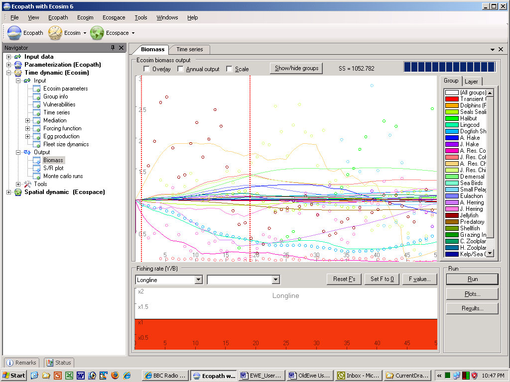
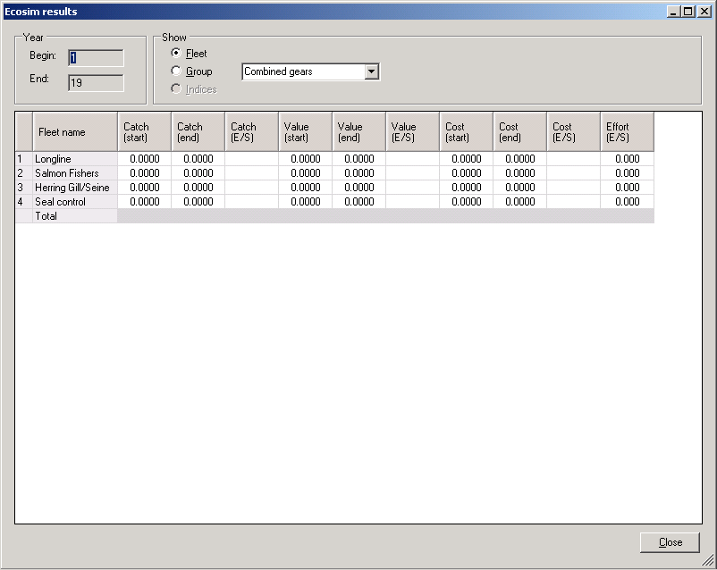

The Ecosim module of EwE provides two ways to explore impacts of alternative fishing policies:
1.Fishing rates can be ‘sketched’ over time and results (catches, economic performance indicators, biomass changes) examined for each sketch. This is using Ecosim in a ‘gaming’ mode, where the aim is to encourage rapid exploration of options (see below for help with this approach).
2.Formal optimization methods can be used to search for fishing policies that would maximize a particular policy goal or ‘objective function’ for management (see Using Ecosim for policy exploration for help with this approach).
The first approach has been widely applied for exploring ecosystem effects of changes in fishing effort and is implemented using the Biomass form, the main form for running Ecosim (Time dynamic (Ecosim) > Output > Biomass).
Before running Ecosim, you should be familiar with the introductory material (see links in Introductory material Ecosim, also found in Chapter 3 of the User Guide).
Running Ecosim
The Biomass form (Figure 9.1) consists of a lower panel, where users can sketch or set fishing rates by fleet/gear or Ecopath group and an upper panel where output biomasses are displayed. On the lower right-hand side of the form are buttons allowing the user to run Ecosim and view outputs (see sections below).
Use this list to select which fleets or groups you want to change fishing rate for. Note: if an Ecopath group is selected, then relative Fs sketched on the sketch pad will be applied across all fleets.
Reset all fishing rates (all groups all fleets) to their Ecopath base values.
Set fishing for the fleet/group selected to zero.
For entry of a fishing intensity value to be applied to the fleet/group selected (or enter a list of comma separated values to set Fs for all fleets).
The sketch pad is used to display time series of relative fishing rates when the fishing mortality is applied to an individual group. When the fishing mortality is applied to a ‘fleet’ the Y-scale of the sketch pad consists of effort multipliers. In either case (individual group or fleet), the default uniform series (representing the Ecopath base values) can be replaced by a time-varying shape, representing temporal changes in the pattern of fishing, by sketching with the mouse (left button held down). The Y-axis will automatically re-scale as you drag your mouse up or down on the sketchpad. The fishing rates are expressed relative to the fishing rates in the underlying Ecopath model.
To set linear trend for change in fishing rates: if you first click the start point with the left mouse button, and then the end point with shift + the left mouse button, a line will be drawn between the two points. Use this to enter, e.g., a linear increase over time in relative fishing rates.
Ecosim users can specify temporal changes in fishing fleet sizes and fishing effort in three ways: (1) by sketching temporal patterns of effort in the model run interface (see above); (2) by entering annual patterns via reference “csv” files along with historical ecological response data (see Time series); or (3) by treating dynamics of fleet sizes and resulting fishing effort as unregulated and subject to fisher investment and operating decisions.
To invoke the fleet/effort dynamics model (Option 3 above), check the “fleet/effort response” box on the Biomass tab. When this box is checked, Ecosim erases all previously entered time patterns for fishing efforts and fishing rates, and replaces these with simulated values generated as each simulation proceeds. See Modelling effort dynamics for detailed description of the effort dynamics model. To set the input parameters, use the Fleet size dynamics form.
Features of the upper (Ecosim biomass output) panel
Check the Overlay box to display subsequent runs on the same plot (i.e., the plot is not cleared when the Run button is pressed).
Check the Annual output box to display
Check the Scale box to display
Opens a form for hiding/displaying groups on the biomass graph.
This is an Ecosim output. When an Ecosim model is loaded, you can load time series ‘reference’ data on relative and absolute biomasses of various groups over a particular historical period, along with estimates of changes in fishing impacts over that period. After time series data have been loaded and applied (see Time series), a statistical measure of goodness of fit to these data is generated each time Ecosim is run. This goodness of fit measure is a weighted sum of squared deviations (SS) of log biomasses from log predicted biomasses, scaled in the case of relative abundance data by the maximum likelihood estimate of the relative abundance scaling factor q in the equation y = qB (y = relative abundance, B = absolute abundance).
See Time series fitting in Ecosim for more details about the sum of squared deviations measure.
The main part of the upper panel is used to display Ecosim’s predicted time series of biomass for groups selected using the Show/hide groups form. Biomasses are shown relative to their baseline Ecopath values. If time series have been loaded and applied, they will be displayed as colored dots on the graph, while Ecosim’s predicted outputs will be displayed as colored lines (Figure xx1).
Vertical red lines indicate when to start averaging results for before/after comparisons (displayed using the Results button, see
To the right of the upper panel, under the Group tab, a smaller panel displays the groups’ names, in the same colors as used for the biomass lines, in order of group number. Clicking on the name of any group in this panel (and releasing the mouse button) results in all other groups being greyed out so that the group of interest can be clearly seen. Click on All groups at the top of the list to return all groups to their original colors.
Behind the Group tab is the Layer tab.
Run Ecosim and view outputs
Click Run to generate time series of biomasses (which will be displayed in the upper panel). The magnitude of changes for each group will depend on many factors, chiefly the fishing regime and the vulnerability settings.
Note that fishing regimes should generally change gradually from one fishing mortality level to the next, not abruptly. Also, the baseline (Ecopath) fishing mortality should be left unchanged for a year or so.
Click this button to open a form displaying a series of plots of the results of the Ecosim simulations (see Plots for further help with this form).
Clicking Results after a run opens the Ecosim results dialogue box (Figure 9.2), which shows a result summary for the run, with start and end dates set using the vertical red lines in the Main upper panel (see above). If you wish to compare results from the beginning and end of the run, first move the vertical red lines accordingly.
You can choose to see results by fleet or by individual group. Results by individual group can be viewed by individual gears or by combined gears (selected using the drop-down menu).
Raw biomass results can be seen by exporting them to a csv file, using Export biomass results to .csv file on the Ecosim menu.

Figure 9.1.

Figure 9.2.